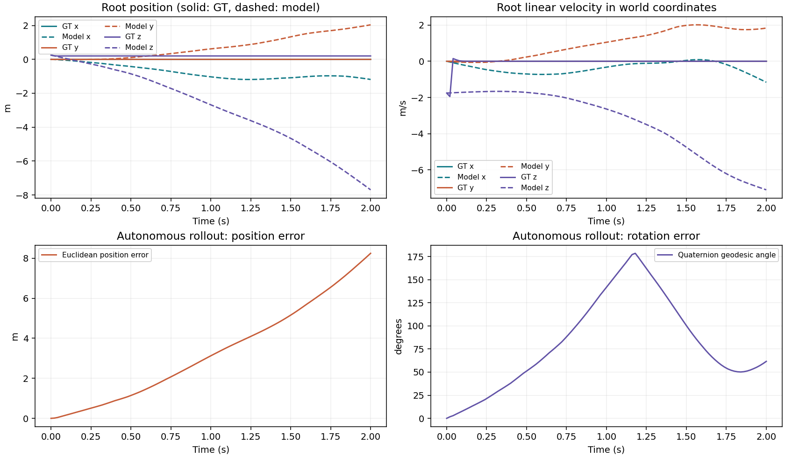

Trajectory 02875
ROLLOUT COMPLETERoot position RMSE2.3821 mRotation geodesic mean81.77°Linear velocity RMSE2.3459 m/s
상태 변화와 오차

선택한 데이터와 모델 정보
{
"id": 2875,
"split": "test",
"scenario": "impact",
"seed": 301200704,
"directory": "trajectory_02875",
"available_steps": 100,
"requested_horizon": 100,
"completed_steps": 100,
"dt": 0.02,
"reason": null,
"diverged": false,
"model_name": "hierarchical",
"checkpoint_meta": {
"seed": 0,
"epoch": 3,
"next_epoch": 3,
"batch_cursor": 0,
"global_step": 78,
"val_loss": 0.3012908447626978,
"best_val_loss": 0.3012908447626978,
"dataset_fingerprint": "cbec40f6154469b815912d11ce50933074ef7203c8d8b09efb5dc4d511038e3b",
"dataset_manifest": "data/cube-nerd/manifest.json",
"description": "Research implementation; NeRD-like baseline is not an official reproduction",
"path": "outputs/gpu-check/hierarchical_budget32_seed0/best.pt",
"model_config": {
"name": "hierarchical",
"hidden_dim": 128,
"heads": 4,
"local_layers": 3,
"global_layers": 3,
"window_size": 64,
"points_per_face": 64,
"floor_points": 256,
"floor_extent": 1.5,
"face_tokens": 1,
"serialization": "hilbert",
"history": 1,
"no_velocity": false,
"no_inertia": false,
"mean_pool": false,
"random_groups": false,
"no_face_exchange": false
}
},
"rollout_metrics": {
"position_rmse": 2.382143259048462,
"rotation_geodesic_rad": 1.4272072315216064,
"linear_velocity_rmse": 2.3459110260009766,
"angular_velocity_rmse": 1.579483985900879,
"joint_position_rmse": 0.0,
"joint_velocity_rmse": 0.0
},
"duration_seconds": 2.0,
"video_name": "comparison.mp4",
"render": {
"video": "docs/visualizations/model-impact/trajectory_02875/comparison.mp4",
"poster": "docs/visualizations/model-impact/trajectory_02875/comparison.png",
"frames": 51,
"fps": 25.0,
"width": 1280,
"height": 480,
"camera": {
"lookat": [
0.0014267132554550699,
6.935439159860834e-05,
0.2243115603923798
],
"distance": 2.012374796578916,
"azimuth": 130.0,
"elevation": -24.0,
"gt_bounds": [
[
-0.34641124637747306,
-0.3464101615137755,
-0.1478681328482329
],
[
0.3492646728883832,
0.34654887029697273,
0.5964912536329925
]
],
"mode": "fixed",
"fit": "ground_truth",
"shared_panels": true
}
}
}